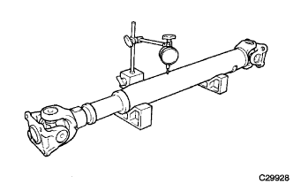
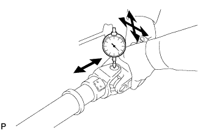

FRONT PROPELLER SHAFT ASSEMBLY > INSPECTION |
| 1. INSPECT FRONT PROPELLER SHAFT ASSEMBLY |
|  |
Using a dial indicator, check the propeller shaft runout.
| 2. INSPECT FRONT PROPELLER SHAFT UNIVERSAL JOINT SPIDER BEARING |
Check the spider bearings for wear or damage.
If necessary, replace the spider bearing.
|  |
Check the spider bearing axial play by turning the yoke while holding the shaft tightly.